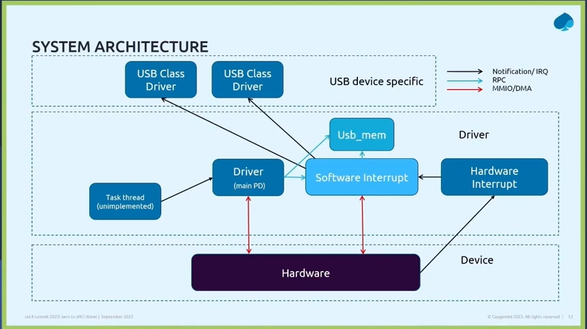

Microkit xHCI USB Driver
Introduction
For this activity the goal was to create an Sel4 native xHCI driver. Writing an entire xHCI driver from scratch is a long and complicated task, so we opted to re-work an existing solution. We chose to use NetBSD's xHCI driver because it has good portability, supports a wide range of hardware, is BSD licenced, is updated often and makes use of interrupts which are more performant compared to other solutions that use polling. The plan was to use this as a base to pull drivers from in the future.
Project Layout
The set up and structure of this project is different to other activites we've completed. See the following repository for more details:
LINK TO MK MANIFEST WITH UPDATED README (and/or explain here a little bit)
xHCI
xHCI is a standardised interface used for USB host controllers. Also known as the USB 3.0 host controller specification, it is designed to be backward compatible, supporting a wide range of USB devices from older USB 1.x to the more recent USB 3.x versions. Compared to its predecessors (OHCI, UHCI and EHCI) it is designed to handle multiple data transfer speeds within a single unified standard, making it more efficient at handling computer resources. The standard describes the basic communication between the software and the host controller including memory layout, data structures, MMIO and DMA.
CAmkES
For our initial development we used CAmkES with the first goal of interfacing with the hardware. We compiled NetBSD, then traced the initialisation of the xHCI, noting down the input/output read and write commands. We then hardcoded the necessary memory register addresses and worked out the changes that we needed to make to the driver so that it was compatible with seL4 and CAmkES. We were then able to initialise the host controller by setting up the correct memory registers, DMA and interrupts. Once we got it to this point we decided to port the example to Microkit.
Microkit
The first goal was to understand the differences between CAmkES and Microkit and become familiar with its features. Compared to CAmkES, Microkit has no standard libraries which meant that we had to export libraries for simple functionality such as logging and memory handling. We also had to create a simple DMA handler, and in the absence of a build system we opted to use GNU Make. Once we had an understanding of Microkit we got our new example to initialise the host controller as we did with CAmkES.
We created a separate DMA library which can be found here: LINK TBD
Architecture

One Protection Domain (PD) acts as a central driver which handles all of the initialization and communicates with the hardware via MMIO. There are additional PD's for the memory handler, software interrupts and hardware interrupts. Task thread is for hotplugging and is not currently implemented.
Memory considerations
Between the core driver PD and the software interrupt PD there are some function pointers to callback functions. In NetBSD's it expects these function callbacks to be running in the same memory address space but with our setup this part of the communication is done between PD's, meaning that they don't have access to the same blocks of memory. Our first attempt at resolving this solution involved using a master PD that handles all of these functions, where the driver would call into the master PD, then the master PD would call into the software interrupt PD. This however was not a viable solution because the software interrupt PD was of a lower priority than the driver which had an affect on performance. Instead we opted to use a context switch, where both PD's at initialisation notify each other of the memory addresses that they will be using for the function pointers. The appropriate memory address is then selected during the function callback.
Devices
Once we initialised host controller, we moved onto devices. We started with keyboard as it was straightforward to get an example up and running and easy to test as it is a human interface device. Next we added a mouse which was conceptually very similar to the keyboard as they were both human interface devices and had the same fundamental layer. Additionally we just needed to include the mouse set up files from NetBSD. We also added touchscreen support by making use of the generic code for the mouse and by implementing extra functionality to account for the Z axis. When probing the bus for drivers we needed to state what device was being attached. This meant modifying the code and recompiling the program when switching between devices. To resolve this we introduced NetBSD's autoconfiguration which reads from a prebuilt list of devices created at kernel compile time to evaluate which USB devices drivers should be assigned.